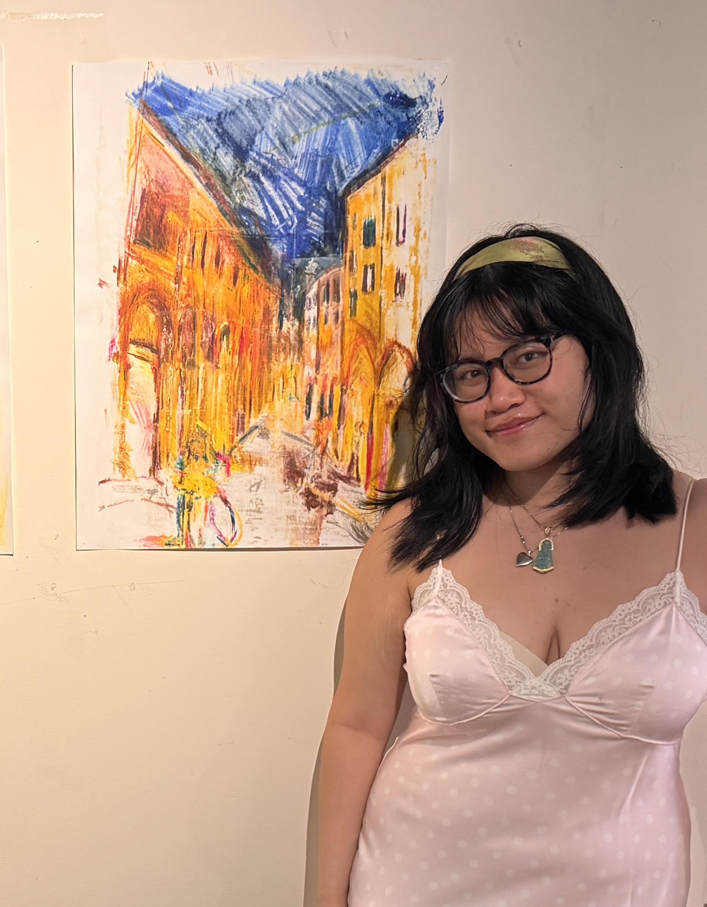

Alison is interested in mark making and surfaces across cultures. More specifically, the juxtaposition of a traditional intaglio print and of a silk pictorial tradition.
Alison’s artmaking is undoubtedly influenced by their foundational study of western literature, art, and their lived experiences in Bologna, Italy. Furthermore, Alison’s previous art practice was informed by western techniques and cultural norms. In particular, the belief of artmaking as an individual practice rather than a collaborative effort. However, the printshop is an open space where everything is shared and seen. Now, patience, community, and flexibility guide Alison’s artmaking.
Alison Le has a B.A. in Humanities and a concentration in Italian Studies from Yale University, and is based in New York.